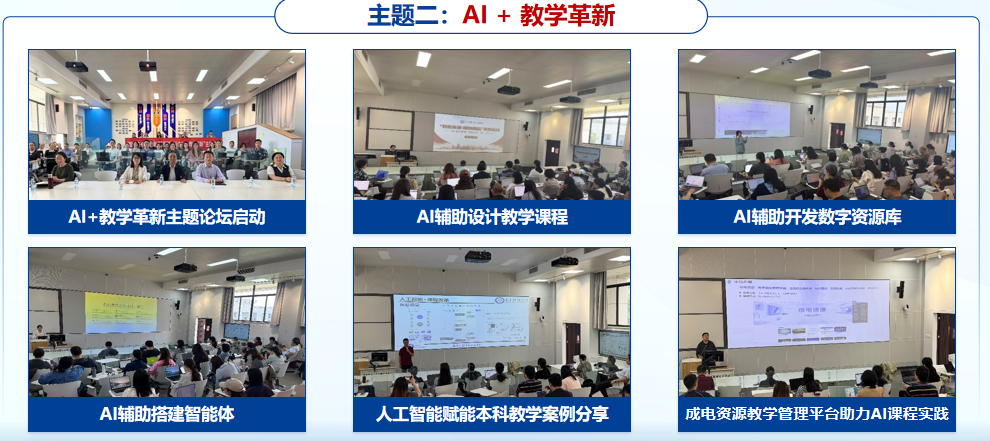
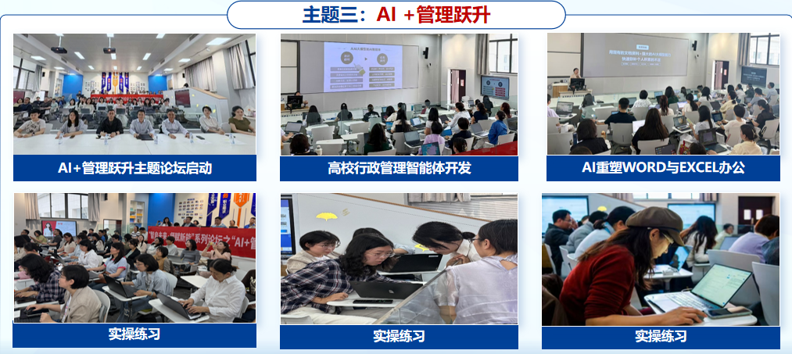
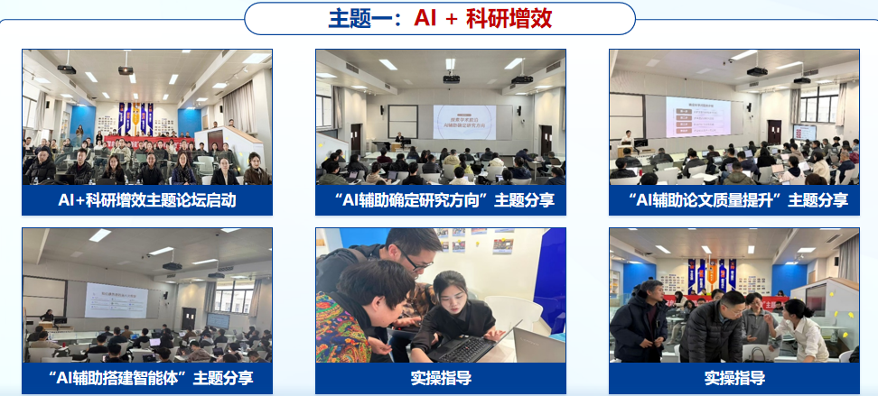

案例4
电子科技大学
教师数字素养培训



2026年3月—6月，电子科技大学教发中心联合秋叶团队，推出教师数智素养系列培训
赋能体系建设
培训于3月至5月每周开展，面向科研、教学、行政三类岗位定制课程，涵盖“AI+科研增效”“AI+教学革新”“AI+管理跃升”三大方向
每期评选优秀代表并统一表彰，形成“学练结合、以评促学”长效机制
示范效应
系列培训模式获多所高校认可——天津大学、武汉大学、西南大学、汕头大学等兄弟院校相继引入同类培训；电子科技大学校长应邀在北京理工大学主办的"2026年中国高校教师发展研讨会"上，以本案例作开幕式专题报告